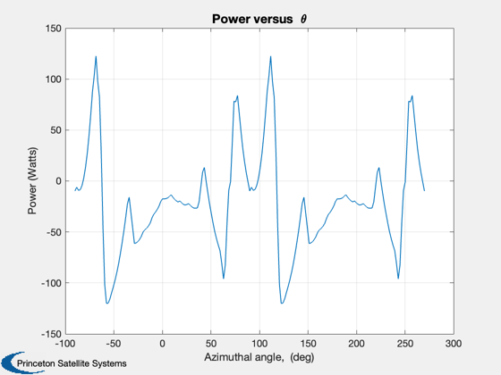
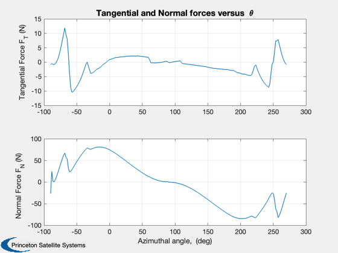
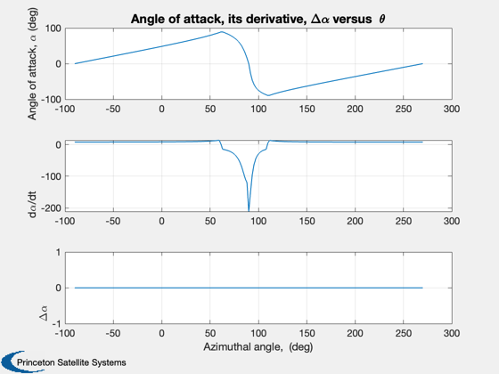
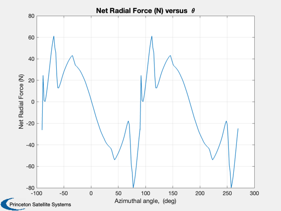

Double Multiple Streamtube with straight 2-bladed VAWT
This is demonstration of the Double Multiple Streamtube model applied to straight-bladed vertical axis wind turbine (VAWT). The VAWT in this demo has two blades.
------------------------------------------------------------------------ See also Plot2D, LoadAirfoilFile, DMSModel ------------------------------------------------------------------------
Contents
%-------------------------------------------------------------------------- % Copyright (c) 2009, 2010 Princeton Satellite Systems, Inc. % All rights reserved. %--------------------------------------------------------------------------
Airfoil Characteristics
%------------------------ BldPrfFl = 'NACA0012P.af'; % A NACA0012 Blade Profile is assumed af = LoadAirfoilFile(BldPrfFl); af.alpha0 = 0; % Airfoil angle of attack for zero lift
Blade Characteristics
%----------------------- bld = struct; bld.c = 0.0254*8; % Blade chord (m) bld.H = (0.3048/2)*5; % Blade half-length (m) bld.Span = 2*bld.H; % Blade span (m) bld.thknss = 0.12*bld.c; % Blade thickness (m)
Rotor/System Characteristics
%----------------------------- rot = struct; rot.zR = 3; % Blade clearance (m) rot.R = bld.H/1; % Rotor radius (m) rot.N = 2; % Number of blades rot.omega = 135*pi/30; % Rotor speed (rad/s)
Wind Characteristics
%---------------------- wnd.Vinf = 12.5; % Free stream wind speed (m/s) wnd.alphaw = 0; % Wind shear component wnd.rho = 1.21; % Air density (kg/m^3) wnd.nu = 1.48e-5; % Kinematic viscosity (m^2/2)
Wind turbine Characteristics
%----------------------------- TSR = rot.omega*rot.R/wnd.Vinf; Ret = rot.R*rot.omega*bld.c/wnd.nu; % Turbine Reynolds number
Model Options
%-------------- DynStlModel = 'IGormont'; % 'StaticStall' or 'IGormont'
Control settings
%----------------- ControlAlgo = 'OffsetPC'; % 'SinePC' or 'OffsetPC'
Double multiple streamtube model
%--------------------------------- [u, upm] = DMSModel(af,bld,rot,wnd,DynStlModel,ControlAlgo); V = u*wnd.Vinf; Ve = (2*u-1)*wnd.Vinf; Vpm = upm*Ve; Vdpm = (2*u-1)*(2*upm-1)*wnd.Vinf; nAngStps = 100; % Number of angular steps per half rotation dTa = pi/nAngStps; % Angle increment dT = dTa/rot.omega; % Time step taUp = -pi/2:dTa:pi/2; ntaUp = length(taUp); taDn = pi/2:dTa:3*pi/2; Xu = rot.R*rot.omega/V; % Upwind tip-speed ratio Xd = rot.R*rot.omega/Vpm; % Downwind tip-speed ratio PwPrfP = zeros(2*ntaUp,1); % Power taP = zeros(2*ntaUp,1); % Theta FTP = zeros(2*ntaUp,1); % Tangential force alphaP = zeros(2*ntaUp,1); % Angle of attack alphadotP = zeros(2*ntaUp,1); % Angle of attack rate DAlpP = zeros(2*ntaUp,1); % Amount of pitch control CQP = zeros(2*ntaUp,1); % Torque coefficient CNP = zeros(2*ntaUp,1); % Normal force coefficient FNP = zeros(2*ntaUp,1); % Normal force NRF = zeros(2*ntaUp,1); % Net Radial Force for j = 1:ntaUp W = V*sqrt((Xu-sin(taUp(j)))^2 + (cos(taUp(j)))^2); Reb = (Ret/Xu)*(W/V); alpha1 = asin(V*cos(taUp(j))/W); alpha2 = feval(ControlAlgo,taUp(j)); alpha = alpha1+alpha2; if( j == ntaUp ) WTemp = Vpm*sqrt((Xd-sin(taDn(2)))^2 + (cos(taDn(2)))^2); alphaTemp1 = asin(Vpm*cos(taDn(2))/WTemp); alphaTemp2 = feval(ControlAlgo,taDn(2)); alphaTemp = alphaTemp1 + alphaTemp2; else WTemp = V*sqrt((Xu-sin(taUp(j+1)))^2 + (cos(taUp(j+1)))^2); alphaTemp1 = asin(V*cos(taUp(j+1))/WTemp); alphaTemp2 = feval(ControlAlgo,taUp(j+1)); alphaTemp = alphaTemp1 + alphaTemp2; end alphadot = (alphaTemp-alpha)/dT; alpha = mod(alpha,2*pi); [CL,CD,CM] = feval(DynStlModel,af,bld,Reb,alpha,alphadot,W); qF = 0.5*bld.c*wnd.rho*W^2*bld.Span; CL = CL*qF; CD = CD*qF; CM = CM*qF; CN = CL*cos(alpha) + CD*sin(alpha); CT = CL*sin(alpha) - CD*cos(alpha); FTP(j) = CT; CQP(j) = FTP(j)*rot.R/(2*wnd.rho*wnd.Vinf^2*rot.R*bld.Span*2*rot.R); FNP(j) = CN; CNP(j) = CN/qF; PwPrfP(j) = rot.omega*rot.R*CT; if( alpha > pi ) alphaP(j) = alpha-2*pi; else alphaP(j) = alpha; end DAlpP(j) = feval(ControlAlgo,taUp(j)); alphadotP(j) = alphadot; W = Vpm*sqrt((Xd-sin(taDn(j)))^2 + (cos(taDn(j)))^2); Reb = (Ret/Xd)*(W/Vpm); alpha1 = asin(Vpm*cos(taDn(j))/W); alpha2 = feval(ControlAlgo,taDn(j)); alpha = alpha1+alpha2; if( j==ntaUp ) WTemp = V*sqrt((Xu-sin(taUp(2)))^2 + (cos(taUp(2)))^2); alphaTemp1 = asin(V*cos(taUp(2))/WTemp); alphaTemp2 = feval(ControlAlgo,taUp(2)); alphaTemp = alphaTemp1 + alphaTemp2; else WTemp = Vpm*sqrt((Xd-sin(taDn(j+1)))^2 + (cos(taDn(j+1)))^2); alphaTemp1 = asin(Vpm*cos(taDn(j+1))/WTemp); alphaTemp2 = feval(ControlAlgo,taDn(j+1)); alphaTemp = alphaTemp1 + alphaTemp2; end alphadot = (alphaTemp-alpha)/dT; alpha = mod(alpha,2*pi); [CL,CD,CM] = feval(DynStlModel,af,bld,Reb,alpha,alphadot,W); qF = bld.c*(1/2)*wnd.rho*W^2*bld.Span; CL = CL*qF; CD = CD*qF; CM = CM*qF; CN = CL*cos(alpha) + CD*sin(alpha); CT = CL*sin(alpha) - CD*cos(alpha); FTP(j+ntaUp) = CT; CQP(j+ntaUp) = FTP(j+ntaUp)*rot.R/(2*wnd.rho*wnd.Vinf^2*rot.R*bld.Span*2*rot.R); FNP(j+ntaUp) = CN; CNP(j+ntaUp) = CN/qF; PwPrfP(j+ntaUp) = rot.omega*rot.R*CT; if( alpha > pi ) alphaP(j+ntaUp) = alpha-2*pi; else alphaP(j+ntaUp) = alpha; end alphadotP(j+ntaUp) = alphadot; DAlpP(j+ntaUp) = feval(ControlAlgo,taDn(j)); PwPrfP(j) = (PwPrfP(j) + PwPrfP(j+ntaUp))/1; PwPrfP(j+ntaUp) = PwPrfP(j); CQP(j) = (CQP(j) + CQP(j+ntaUp))/1; CQP(j+ntaUp) = CQP(j); taP(j) = -pi/2 + (j-1)*dTa; taP(j+ntaUp) = taP(j) + pi; NRF(j) = FNP(j) + FNP(j+ntaUp); NRF(j+ntaUp) = NRF(j); end
Results
fprintf(1,'\n') fprintf(1,'Dynamic Stall Model Used = %s\n', DynStlModel) fprintf(1,'Average Power = %5.3f kW\n', mean(PwPrfP)/1000) fprintf(1,'Max. Tangential Force = %5.2f N\n', max(FTP)) fprintf(1,'Min. Tangential Force = %5.2f N\n', min(FTP)) fprintf(1,'Max. Normal Force = %5.2f N\n', max(FNP)) fprintf(1,'Min. Normal Force = %5.2f N\n', min(FNP)) fprintf(1,'Tip Speed Ratio = %5.2f\n', TSR) fprintf(1,'Rotor speed = %5.2f rpm\n', rot.omega*30/pi) fprintf(1,'Rotor height = %3.2f ft, Rotor diameter = %3.2f ft, Chord length = %3.2f in\n',... bld.Span/(0.0254*12), 2*rot.R/(0.0254*12), bld.c/0.0254) fprintf(1,'\n') xL = 'Azimuthal angle, (deg)'; yL = 'Power (Watts)'; Plot2D(taP'*180/pi,PwPrfP',xL,yL,'Power versus { }\theta') grid on yL = {'Tangential Force F_T (N)', 'Normal Force F_N (N)'}; Title = 'Tangential and Normal forces versus { }\theta'; Plot2D(taP'*180/pi,[FTP';FNP'],xL,yL, Title) grid on yL = {'Angle of attack, \alpha (deg)', 'd\alpha/dt', '\Delta\alpha'}; Title = 'Angle of attack, its derivative, \Delta\alpha versus { }\theta'; Plot2D(taP'*180/pi,[alphaP'*180/pi;alphadotP';DAlpP'*180/pi],xL,yL, Title) grid on yL = 'Net Radial Force (N)'; Title = 'Net Radial Force (N) versus { }\theta'; Plot2D(taP'*180/pi,NRF',xL,yL, Title) grid on %-------------------------------------- % $Date$ % $Id: c09804aee35bf0b62fd792e0464f2aa3cb0fabde $
Dynamic Stall Model Used = IGormont Average Power = -0.020 kW Max. Tangential Force = 11.86 N Min. Tangential Force = -10.35 N Max. Normal Force = 80.98 N Min. Normal Force = -84.49 N Tip Speed Ratio = 0.86 Rotor speed = 135.00 rpm Rotor height = 5.00 ft, Rotor diameter = 5.00 ft, Chord length = 8.00 in   